HSK3 – Đề 7 (H31007)
Kiểm tra hình 80 câu. Không hiển thị đáp án. Chưa nhập SQL Server.
I. Nghe – Câu 1–40
Bảng lựa chọn câu 1–5
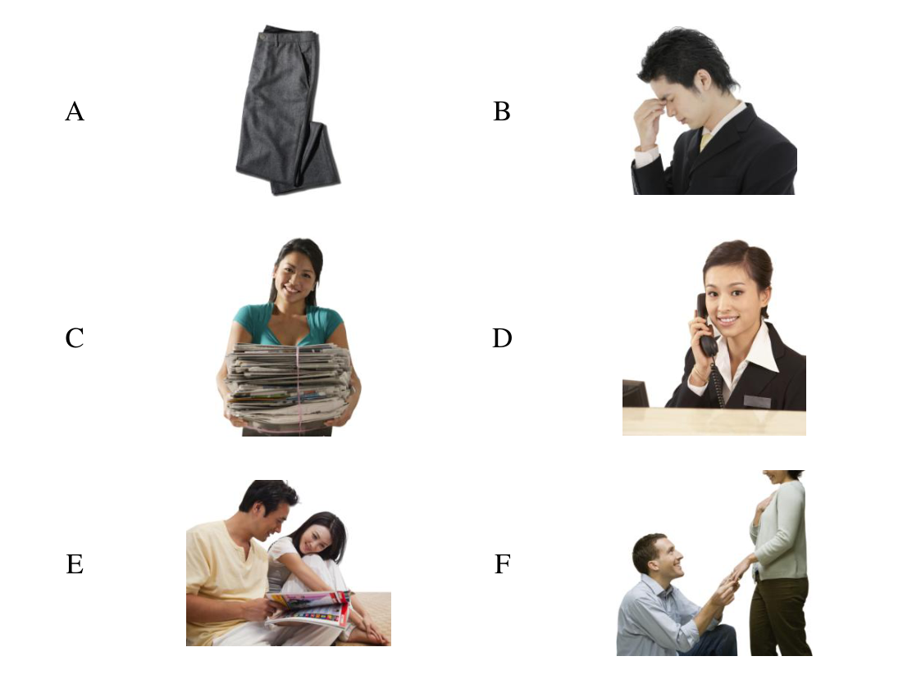
Bảng lựa chọn câu 6–10

Câu 11
Câu 12
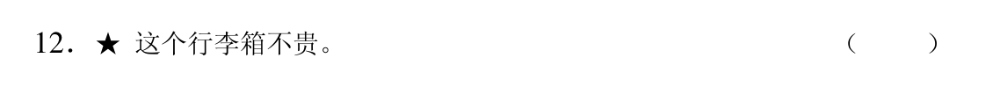
Câu 13
Câu 14
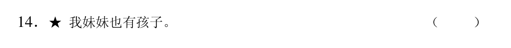
Câu 15
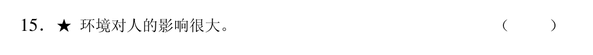
Câu 16
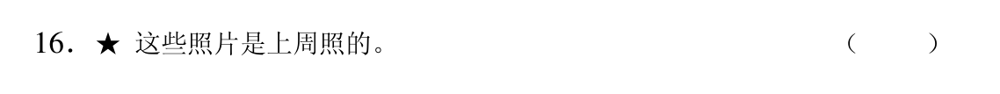
Câu 17
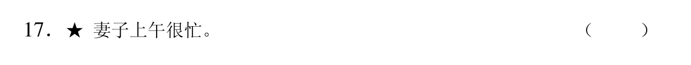
Câu 18
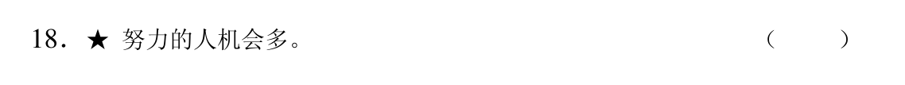
Câu 19
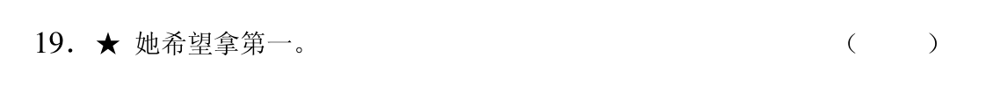
Câu 20
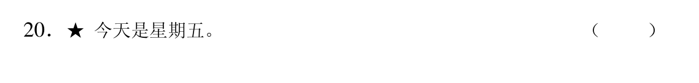
Câu 21
Câu 22
Câu 23
Câu 24
Câu 25
Câu 26
Câu 27
Câu 28
Câu 29
Câu 30
Câu 31
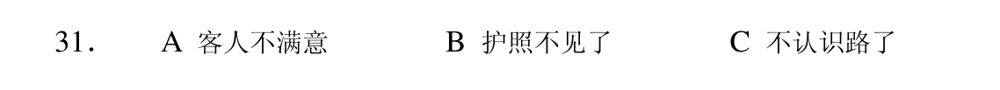
Câu 32
Câu 33
Câu 34
Câu 35
Câu 36
Câu 37
Câu 38
Câu 39
Câu 40
II. Đọc – Câu 41–70
Bảng lựa chọn câu 41–45
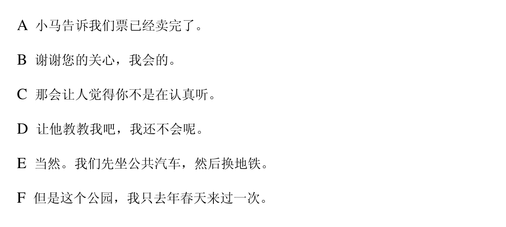
Câu 41
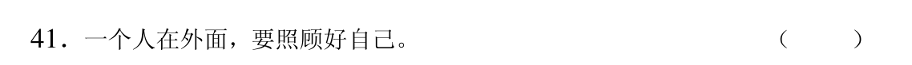
Câu 42
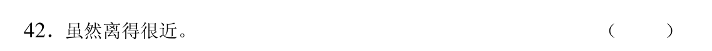
Câu 43
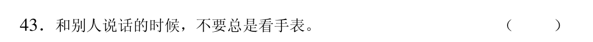
Câu 44
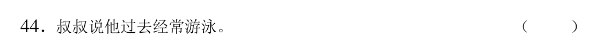
Câu 45
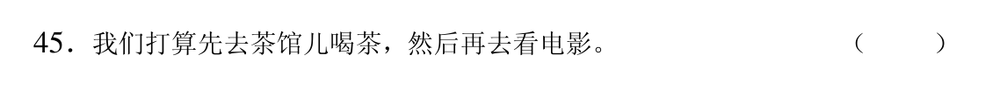
Bảng lựa chọn câu 46–50
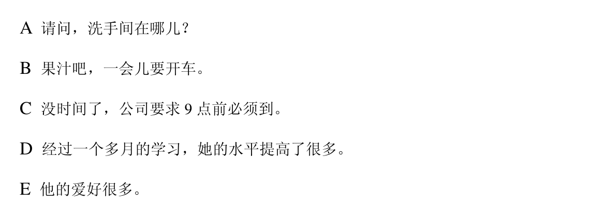
Câu 46
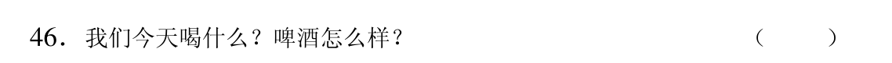
Câu 47
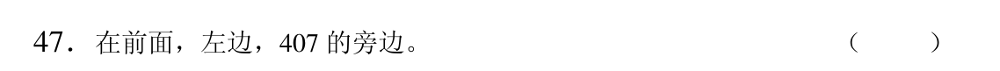
Câu 48
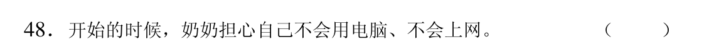
Câu 49
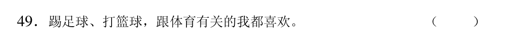
Câu 50
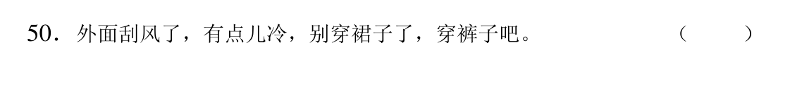
Bảng lựa chọn câu 51–55
Câu 51
Câu 52
Câu 53
Câu 54
Câu 55
Bảng lựa chọn câu 56–60
Câu 56
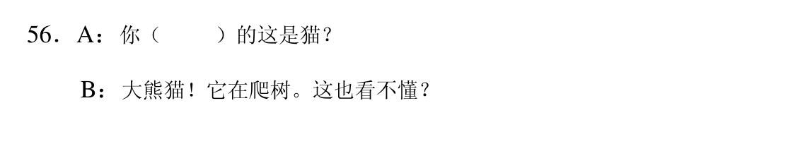
Câu 57
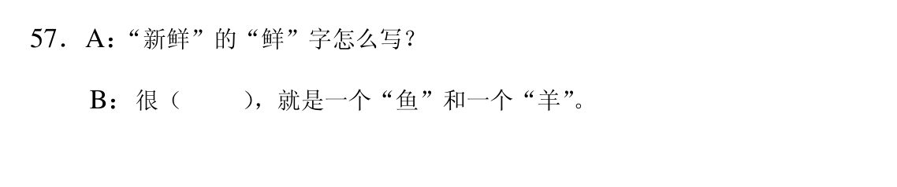
Câu 58
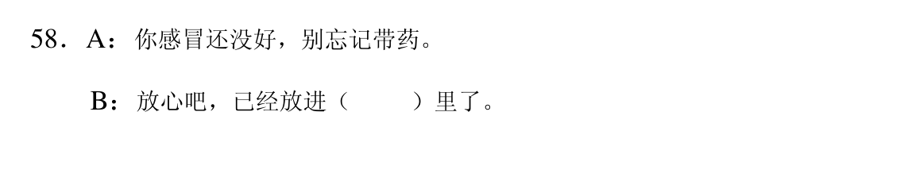
Câu 59
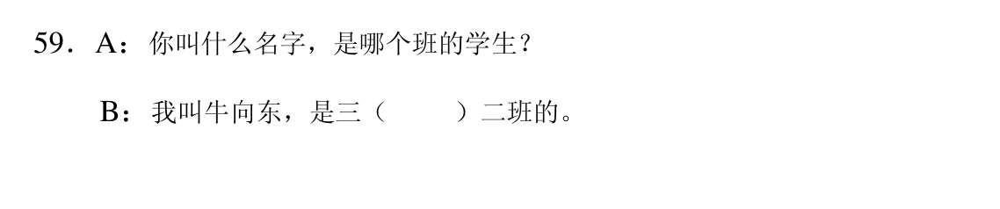
Câu 60
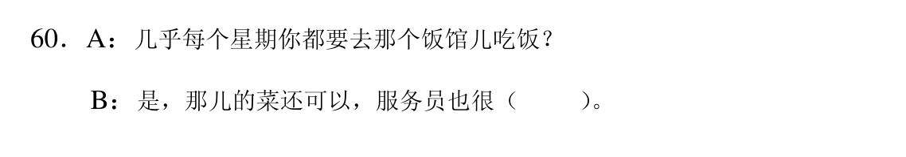
Câu 61
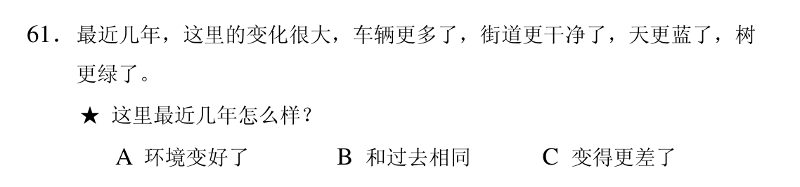
Câu 62
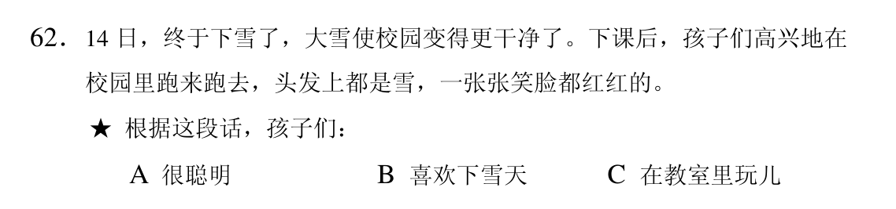
Câu 63
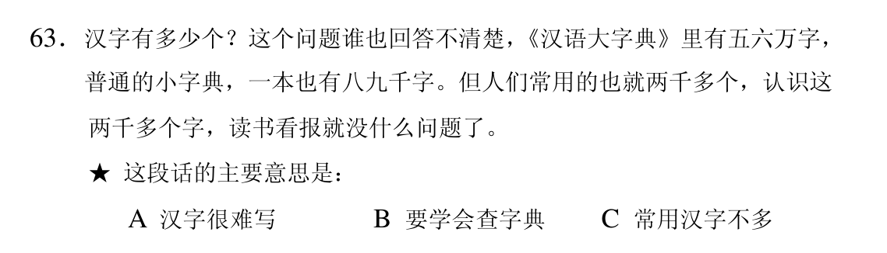
Câu 64
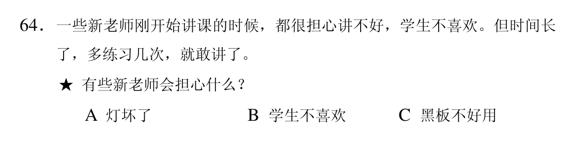
Câu 65
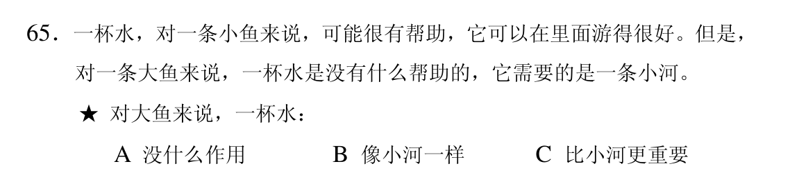
Câu 66
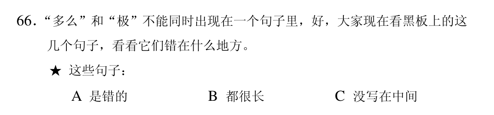
Câu 67
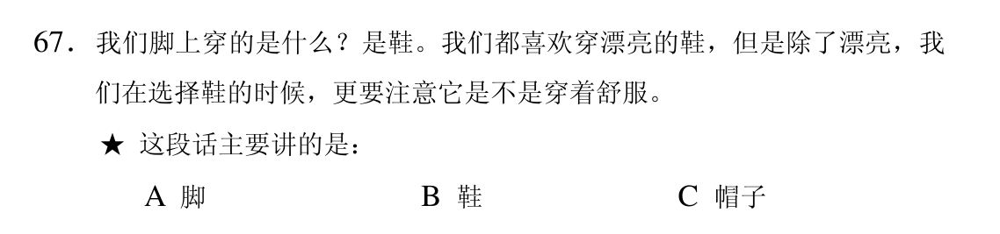
Câu 68
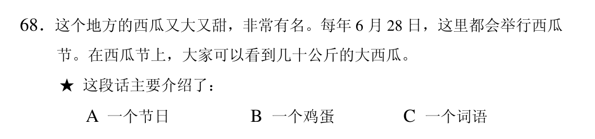
Câu 69
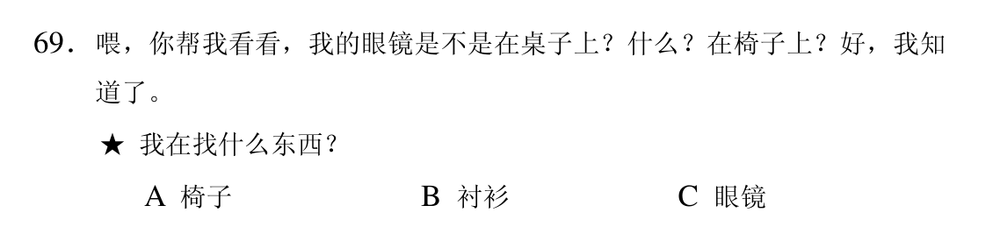
Câu 70
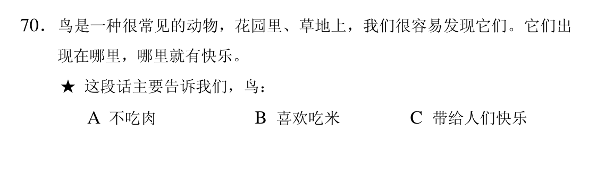